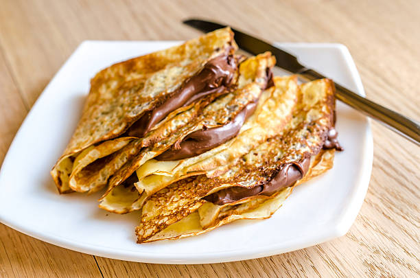

Crepes
"Como preparar crepes en casa de manera casera"

Ingredientes:
- 125 gr de harina
- 250 ml de leche
- 5 gr de azúcar
- 1 cucharadita de mantequilla para untar la sartén
- 2 huevos
- 50 gr de mantequilla
- 1 pizca de sal
Preparación:
- Mezclar los ingredientes secos
- Agregar los ingredientes húmedos:
- Mezclar la masa
- Dejar reposar la masa
- Calentar una sartén
- Verter la masa
- Cocinar el crepe
Información nutricional:
- Calorías
- 90-120 calorías por crepe
- Carbohidratos
- 15-20 gramos de carbohidratos por crepe
- Proteínas
- 3-5 gramos de proteínas por crepe
- Grasas
- 2-4 gramos de grasa por crepe
- Azúcares
- 2-4 gramos de azúcares.
Nota: Los valores nutricionales y los ingredientes pueden variar según la receta y el tamaño de los crepes.